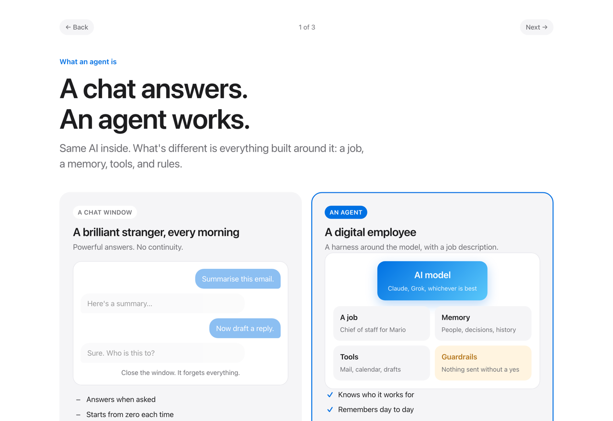
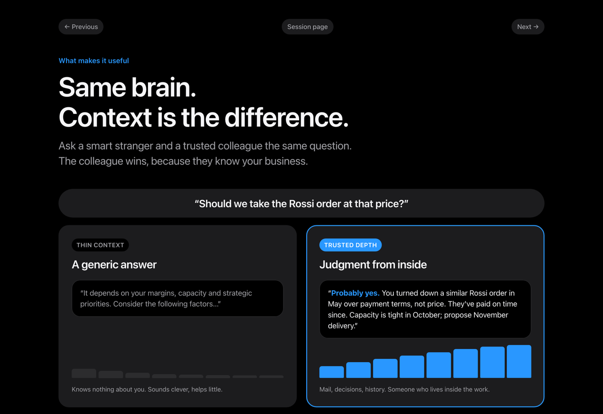

Working session · Mario Testa & Romansas · 24 September 2026
Not an email tool. A business assistant that helps with information, priorities, communication and decisions across the company, built one safe step at a time.
The opportunity
An agent has two things a chatbot does not: context about you and your work, and tools such as mail and calendar, used only with your approval. Context is the important part. Thin context gives generic answers. Deep, trusted context gives judgment that feels like someone who lives inside the company.

A chat answers. An agent works.Graphic 1
Same brain. Context is the difference.Graphic 2Click a graphic to open it.
The proposal
A private memory of Mario's priorities, people, decisions and know-how, held in a cloud account Milano Bro controls, with narrow Microsoft 365 access that IT grants and can revoke. On top of it, a chief-of-staff assistant that briefs what matters, thinks through decisions with company context, drafts the work, and acts only with clear approval.
Morning brief, triage, drafted replies.
IT review before startMeeting prep, actions from transcripts, follow-ups tracked.
IT review before startA full picture of what's moving across the company.
IT review before startTalk to it anywhere. Deeper operating know-how.
IT review before startWhere we are
So each item can be checked on its own. "Working" is used only where it runs today.
Runs daily on Jason's own data. Chat, voice, meeting → actions, approval gate, memory with sources.
Scheduled briefs, monitoring, backups. Built, needs configuring for a new user.
Private memory in a company-controlled cloud, with narrow Microsoft 365 access. Not built, connected, or security-reviewed.
Calendar, meetings, Teams and voice, added one phase at a time.
Proven today
The same pattern is already working on Jason's own data and machines: two ways in (chat and voice), a chief of staff that routes work and holds the approval gate, six live desks, and one shared memory. This is what you'll see in the demos.
Hermes (chat) and Grok Bot (voice) are equal front doors into one context layer: an Obsidian vault as the human-readable truth, GBrain as the search over it. Agents read there; none keeps a second brain.
Open the org chartThe context layer ↗A short brief on what deserves attention, and why.
Weighs a real decision using what it already knows, plus research, with sources.
Does the work, then stops at the approval gate before anything is sent.
Built for IT control
IT decides how far and how fast it goes. Every step can be reviewed and reversed.
No other mailboxes. No SharePoint or OneDrive for now.
A single app registered in Milano Bro's Microsoft 365. IT grants, audits and revokes it.
Nothing new is connected until Romansas has reviewed it.
The memory lives where IT chooses. Which cloud is IT's decision.
Sending, booking and changes all wait for Mario's approval.
Jason supports the pilot. Long-term support is agreed together afterwards.
Next steps